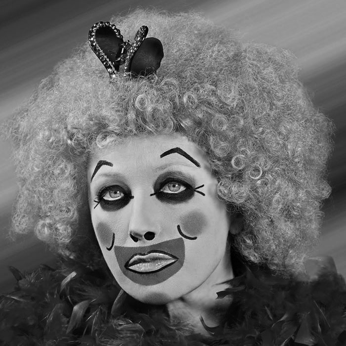

Bus Riders
1976
Serie de fotografías de quince pasajeros que esperan la llegada del autobús. Esos pasajeros tienen su
personalidad, carácter y
lenguaje corporal específicos. Cada uno de ellos es muy diferente al otro. Hay personas de todos
los ámbitos de la vida.

Untitled Films Stills
1977-80
Una ingenua joven dominada por la ciudad, que mira
ante una persona desconocida o un objeto fuera de marco.
Contiene
en su interior una amenaza y una sensación de que nada bueno puede salir.
Mediante la inserción de molestias en las imágenes de mujeres, Sherman le pide al espectador a
considerar el tema y comprender su vulnerabilidad.
Centerfolds
1981
Proyecto en extensión de dos páginas encargado por la revista
Artforum, en el que inspirada en las páginas centrales de revistas pornográficas,
personificó diversas personajes imaginarias que se muestran erotizadas, pero a la vez atemorizadas
debido a su posición de objeto de mirada para el goce escópico del otrx.
Pink Robe
1982
Un excelente ejemplo de controvertida pieza feminista. El fondo oscuro enfatiza la
atmósfera ominosa de la obra, donde el sujeto aparece indefenso. Usa
la bata. Combinado con su expresión cada vez más hostil, sugiere que la
mujer vulnerable ha decidido tomar una posición y no será oprimida. Este
trabajo encarna el empoderamiento femenino.
Disasters and fairy tales
1985-89
Explora temas más oscuros, incorporando prótesis, máscaras y fluidos ambiguos. Las figuras en estas
obras son muñecas
o maniquíes, lo que
resulta en imágenes extrañas y grotescas. Por medio de lo abyecto,
representando vísceras, vómitos y mutaciones, alerta del cambio que está sufriendo la sociedad,
cayendo en un consumismo
feroz.

History portraits
1988-90
Fue un encargo con motivo del 200 aniversario de
la Revolución Francesa.
Pretende destacar,
el abismo que se abre entre el modelo histórico y el simulado, entre el ideal y una
realidad metamorfoseada, mutilada y desnaturalizada. Se coloca
pechos falsos y se maquilla, para dar la sensación de que el modelo ha estado
posando horas, con un halo de aburrimiento.
Sex pictures
1992
En los '90, la Fundación Nacional para las Artes retiró su financiación de proyectos
“polémicos” y como un acto de protesta,
hizo retratos extravagantes de los genitales, el uso de maniquíes de plástico del
hospital y los maniquíes comunes a las aulas de la escuela de medicina. Este tipo de subversión
continúa definiendo la carrera de Sherman.

Clowns
2003-04
Los cómicos trajes, su maquillaje y los fondos vivos contrastan con sus expresiones abatidas.
Por primera vez, utilizó técnicas
digitales.
Esos
personajes, destinados a hacernos reír en la exageración de lo burlesco, terminan
siendo la excusa ideal para que realice una crítica a la condición humana después del 11 de
septiembre.
Society portraits
2008
Estudia a las mujeres ricas estadounidenses
ávidas de afecto, cuyo único atributo es el dinero desprovisto de la fama y el reconocimiento social
y cuya validación y aspiración máxima se encuentra en poder acceder a ese
último eslabón en la cadena social. Se enlaza en algunos sentidos con el trabajo de Daniela Rossell
Ricas y Famosas (1999).